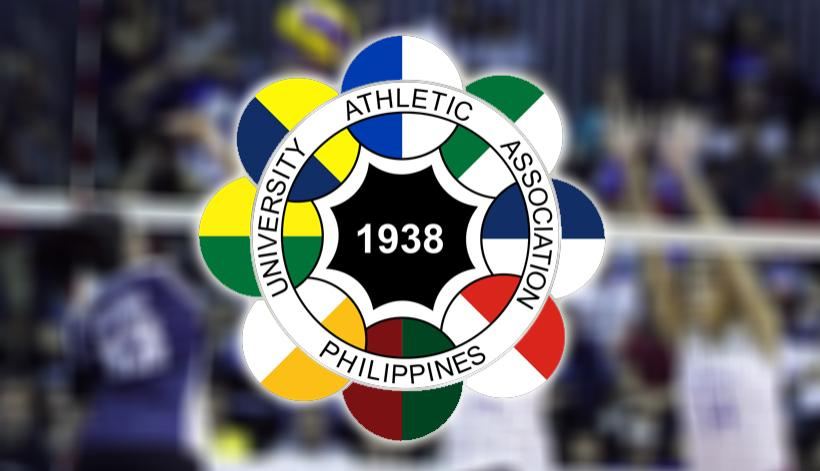

Good News > UAAP eyes Season 84 opening on March 26.
Author: Fastbreak Website | February 26, 2022
The University Athletic Association of the Philippines (UAAP) eyes to kick off Season 84 on March 26 with men’s seniors basketball.
According to UAAP President Emmanuel Calanog, matches are being eyed at SM Mall of Asia Arena in Pasay City, Ynares Center in Antipolo City, Smart- Araneta Coliseum in Quezon City and the Filoil Center in San Juan.
For men’s basketball, the UAAP will retain the double-round robin with each gameday at Tuesday, Thursday and Saturday with all schools playing on the said date.
“We are looking to start the men’s basketball by March 26 and we project it to end by May 12,” Calanog said in a presser on Friday. “It will be a bubble format with no fans allowed at least the first round.”
Apart from men’s seniors basketball, also to be played are women’s volleyball, men’s 3×3 basketball, poomsae and men’s beach volleyball.
“We really want to get our athletes back. The idea of technically these two seasons is get back to normal,” said Calanog.
The UAAP last played its competition in the early part of 2020 with the second round of UAAP Season 82 before being cancelled due to COVID-19 pandemic.
Tweet this article
"News That Hits Home, Hundred Stories, One Truth"
Copyright © Calacday & Escanilla News 2022. All Rights Reserved.